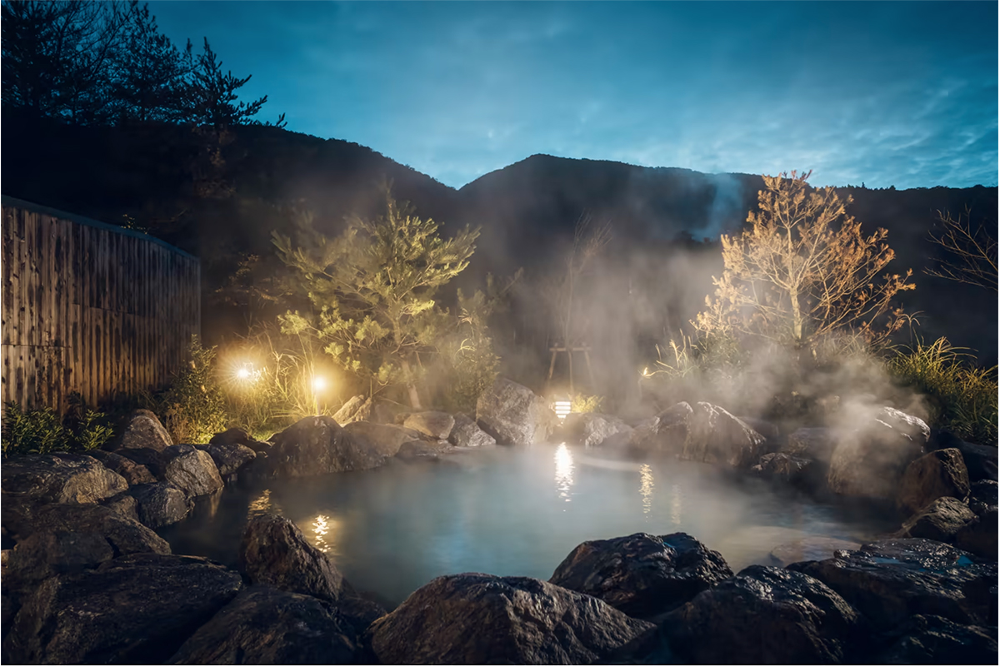
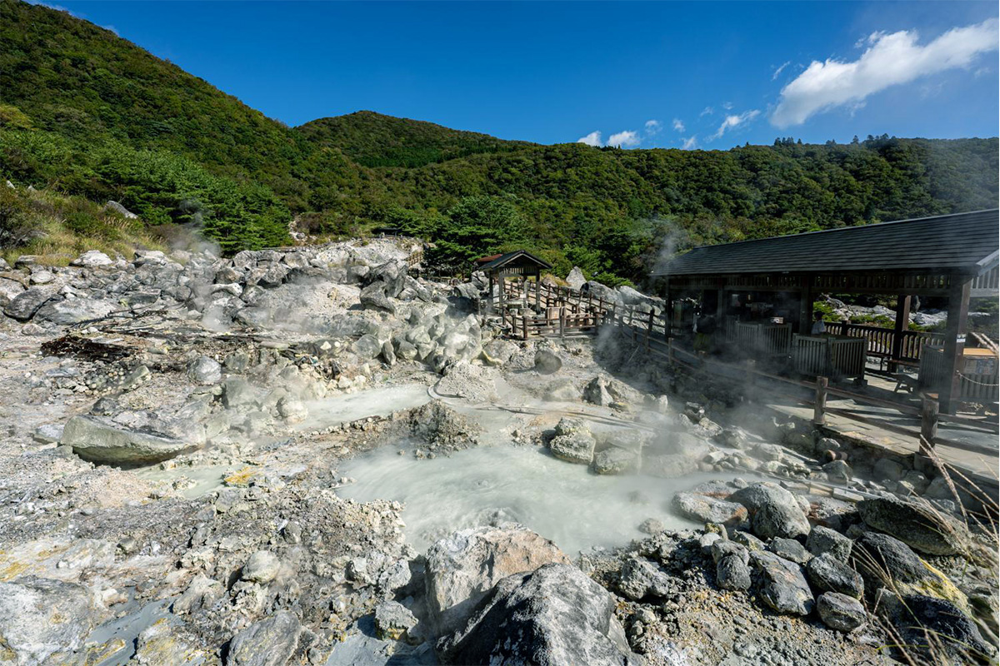
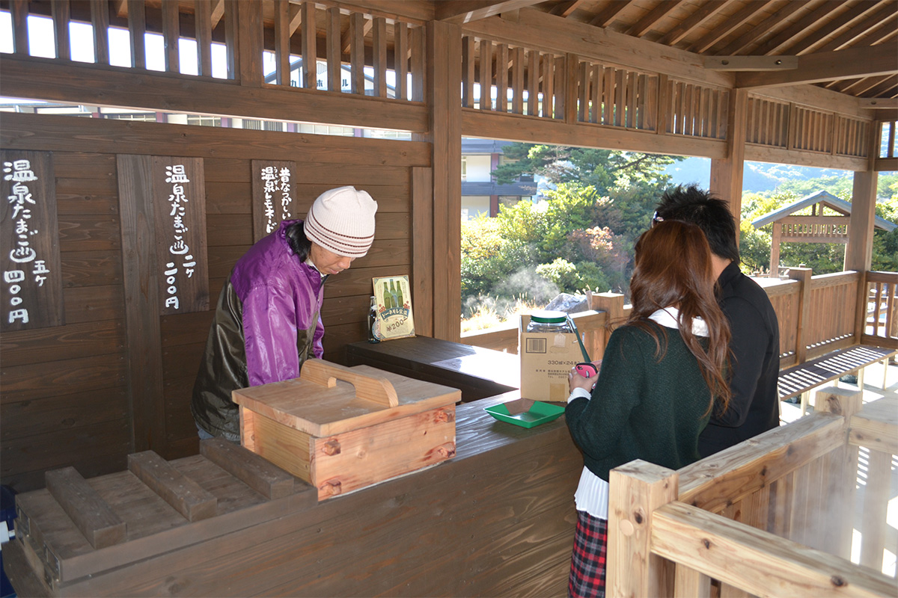
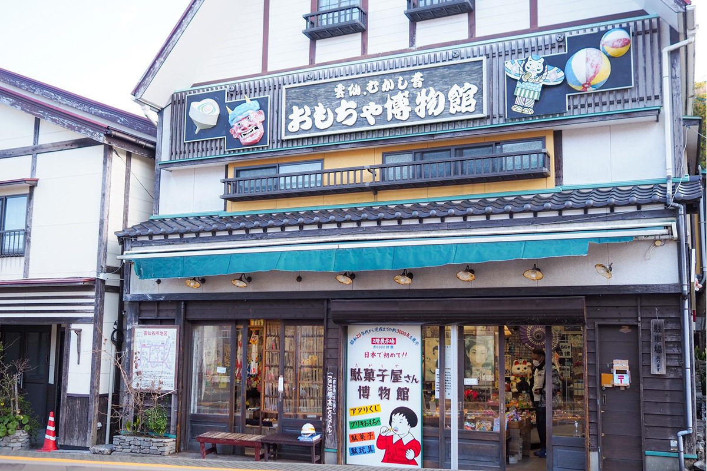
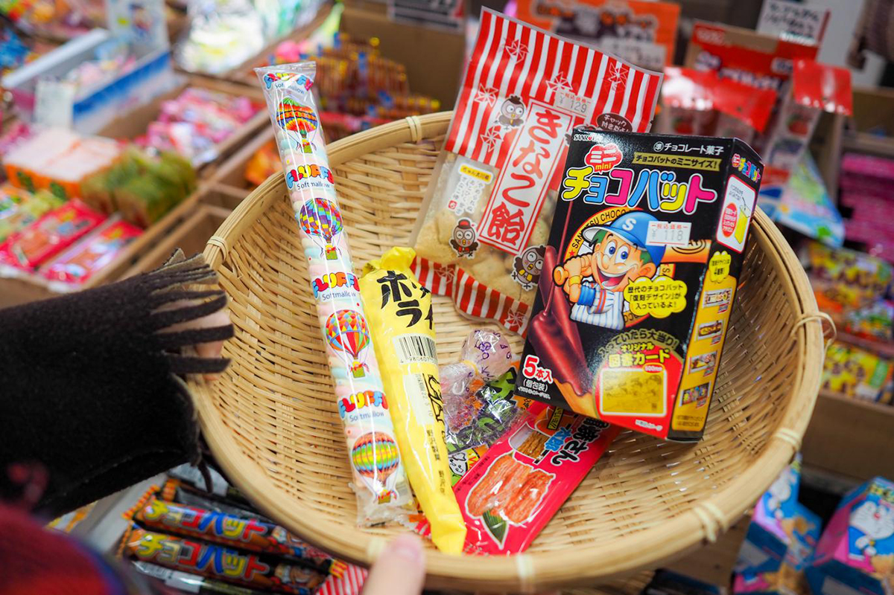
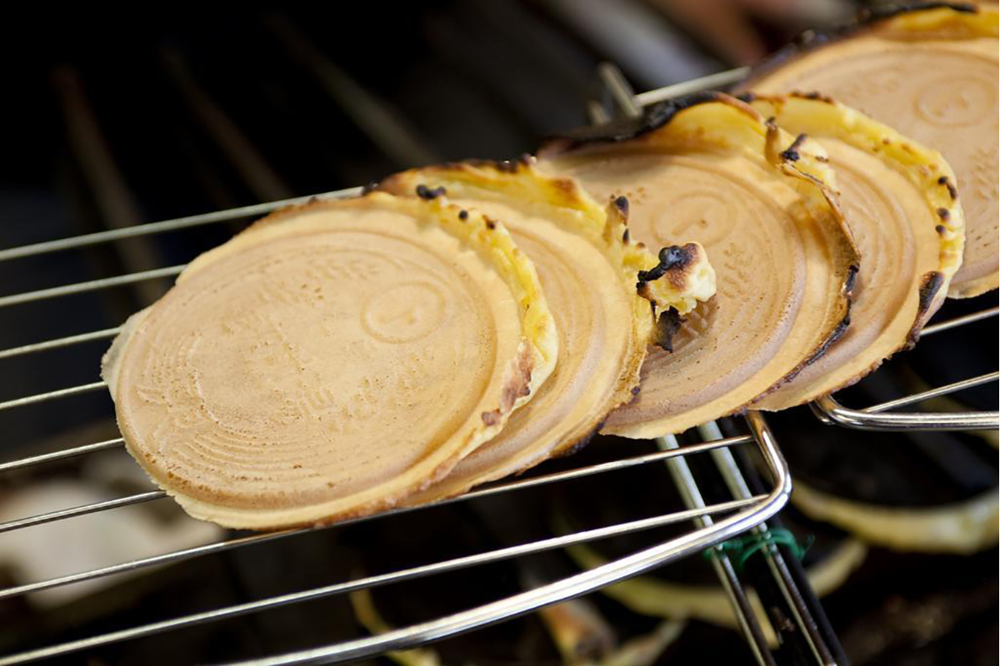
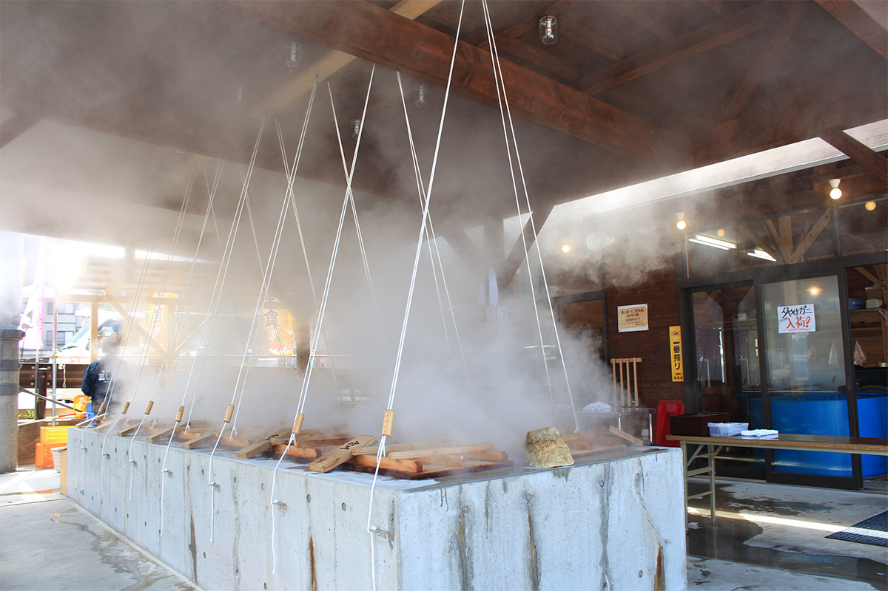
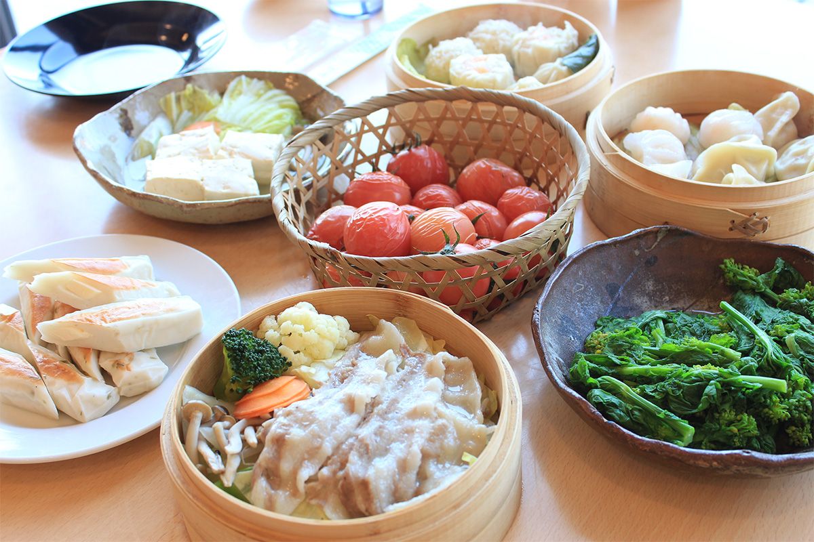

Префектура Нагасаки · Ундзэн · онсэны и еда
Ундзэн: прогулка по «адам», лавка старых сладостей и обед на пару из источника

Ундзэн, курортный городок на склонах вулкана в префектуре Нагасаки, известен прежде всего своими «адами»: долиной, где из-под земли бьёт пар. Рядом с ней стоят старая лавка сладостей и мастерская печенья, а у моря готовят еду на пару из горячего источника.
Дорога
Как добраться до Ундзэна
В 2022 году открылась линия синкансэна Нисикюсю между Нагасаки и Такэо-онсэном, и до Ундзэна стало проще доехать. Удобнее всего сойти на станции Исахая и пересесть на автобус или взять машину напрокат. Из центра Нагасаки на машине выходит около полутора часов.
Природа
«Ады» Ундзэна: земля, которая дышит
Над долиной висит запах серы, а пар и жар, вырываясь из глубины, затягивают всё вокруг. Неудивительно, что это место называют адом. Отсюда и название: «ады» Ундзэна, или Ундзэн-дзигоку. Долина известна и как место, где казнили христиан, поэтому здесь стоит памятник мученикам.

Всего здесь около 30 «адов», то есть горячих источников. У многих есть собственное имя и своя история, часто печальная: «ад великого вопля» Дайкёкан-дзигоку, О-ито-дзигоку и другие. Эти легенды рассказывают до сих пор.
В 2016 году долину обновили, и из места, на которое смотрят издалека, она превратилась в место, которое можно почувствовать. Через «ады» проложена тропа, прогулка по ней занимает около часа. По пути устроены новые площадки, где жар земли ощущаешь всем телом.
Первая из них называется «асимуси», что значит «пар для ног». Это беседка для отдыха: ставишь ноги на настил и чувствуешь подземное тепло и горячий пар. В мастерской «Ундзэн-дзигоку кобо» продают местное угощение: яйца, сваренные на пару из «адов». А на смотровой площадке «Ундзэн-дзигоку мидай», которая служит и местом отдыха, можно есть такие яйца, глядя на окрестные источники.

«Ады» Ундзэна (Ундзэн-дзигоку)
- Адрес
- префектура Нагасаки, Ундзэн, Обама-тё, Ундзэн
- Телефон
- +81 957-73-3434 (Туристическое бюро Ундзэна)
- Как добраться
- около 1 часа 30 минут на машине из Нагасаки, около 1 часа 10 минут на машине из аэропорта Нагасаки
Ностальгия
Лавка старых сладостей при музее игрушек
На одной из улиц курортного городка стоит «Музей игрушек Ундзэна». Стоит переступить порог, и кажется, что попал в Японию эпохи Сёва (1926–1989). На первом этаже от пола до потолка теснятся сладости и игрушки, какие продавали детям несколько десятилетий назад, и глаза разбегаются.

Всего здесь около 2000 видов товаров: сладости с лотереей, наборы для «солнечной фотографии», которую проявляют на солнце, целлулоидные маски, картонные фишки «мэнко» для детской игры. Взрослым здесь не менее интересно, чем детям.

Музей игрушек Ундзэна
- Адрес
- префектура Нагасаки, Ундзэн, Обама-тё, Ундзэн, 310
- Телефон
- +81 957-73-3441
- Часы работы
- 10:00–17:30
- Выходные
- нерегулярно
- Как добраться
- от станции Исахая автобусом до Ундзэна около 1 часа 20 минут, от автостанции «Ундзэн» 3 минуты пешком
Сладости
«Тотоми-я хомпо»: онсэн, который можно съесть

«Ю-сэмбэй» замешивают из пшеничной муки, сахара, яиц и соды, добавляя воду из горячего источника. Получается слегка сладкое, хрустящее и ароматное печенье, похожее на вафлю, и его называют «онсэном, который можно съесть». Считается, что первые ю-сэмбэй испекли в начале эпохи Мэйдзи, когда в замке Симабара ещё жил князь: их готовили в подарок правителю, большому любителю горячих источников.
«Тотоми-я хомпо» это старейшая лавка ю-сэмбэй в Ундзэне. Здесь по-прежнему пекут каждое печенье по одному вручную: тесто заливают в железную форму весом 3 кг и запекают лист за листом. В лавке можно попробовать испечь ю-сэмбэй самому: вам расскажут о сырье, покажут, как печь, и поведают историю этого печенья. Занятие длится около 30 минут на человека, нужна предварительная запись, а испечённое можно забрать с собой. А ю-сэмбэй, только что вынутые из формы, особенно хороши.
«Тотоми-я хомпо»
- Адрес
- префектура Нагасаки, Ундзэн, Обама-тё, Ундзэн, 317
- Телефон
- +81 957-73-2155
- Часы работы
- 8:30–22:00
- Выходные
- нерегулярно
- Даты
- мастер-класс только в марте, апреле, мае, сентябре, октябре и ноябре, для детей примерно с 10 лет
Еда
«Мусигамая»: обед на пару из горячего источника
Онсэн Обама, на берегу залива у подножия Ундзэна, по тепловой мощности источников считается первым в Японии. В ресторане «Мусигамая» эту силу пускают в дело: еду здесь готовят на пару из источника, и процесс можно увидеть своими глазами.

Гость сам выбирает продукты: свежую рыбу и моллюсков, которые плавают в аквариумах, овощи, наборы китайских пирожков. Всё это запаривают над высокотемпературным источником Обамы. Кроме блюд на пару в меню есть рыбные донбури, начиная с «дзигэ-дон» из улова местных рыбаков, и комплексные обеды с сасими, тушёной рыбой и тэмпурой.

«Мусигамая»
- Адрес
- префектура Нагасаки, Ундзэн, Обама-тё, Марина, 19-2
- Телефон
- +81 957-75-0077
- Часы работы
- 11:00–15:00 (последний заказ 14:30), 17:00–21:00 (последний заказ 20:00)
- Выходные
- вторник
- Сайт
- musigamaya.com
Итог
Ундзэн за один день
Горячие источники с силой «адов», лавка, где вспоминается детство, еда, которую нигде больше так не готовят: в Ундзэне можно отдохнуть душой и телом и увидеть Японию непривычной. Сменилось несколько эпох, а что-то здесь остаётся неизменным.